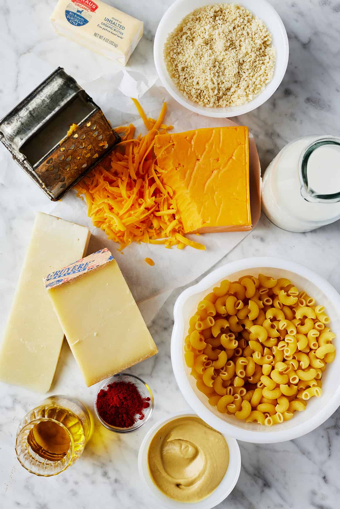

Mac & Cheese
This homemade mac and cheese recipe will be a hit with the whole family! It will be key to your heart.

Ingredients
- Macaroni - this cute elbow pasta is perfect for cheesy sauce!
- Cheese sauce - sharp cheddar and Gruyere cheese, butter, flour, milk, dijon mustard.
Instructions
- Melt butter in a pan, mix it with flour to form a simple bechamel sauce. Slowly add the milk and stir constantly until thick and bubbly.
- Add cheeses to the sauce and the dijon mustard.
- Cook the pasta until it is al dante.
- Mix the sauce with the pasta, add salt and pepper according to taste.